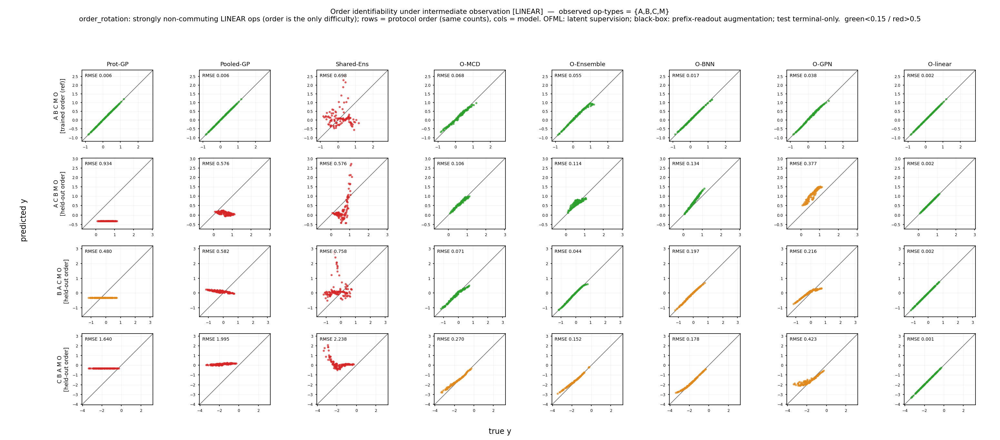

主張 1 · 中間観測は識別可能性の限界を修復する
線形 order ストレスでは、端末読み出しだけでは解けなかった操作 order を、学習中の中間観測が識別可能にする — ただし合成的（compositional）モデルに限る。設計上識別可能な OFML-linear が下限（\(\eps=0.002\)）を与え、柔軟なニューラル OFML（Ensemble / MCD / BNN / GPN）は空観測の 0.44–0.72 から完全観測サブセットで 0.09–0.26 へ大きく救済される。対して count（操作数）記述子ベースの Shared-Ens / Pooled-GP / Prot-GP は同一の観測を受け取っても横ばい（1.078→1.067, 0.795→0.790, 0.771→0.765）— order は count 特徴に載らないため、観測の行は活かされない。これが主張 1 の非対称性である。

order_rotation）中間観測アブレーション（traceablation2）。完全観測サブセット \(S=\{A,B,C,M\}\) の例。行＝ホールドアウト order、列＝モデル、セル＝per-proto RMSE（\(\approx\NRMSE\)、暗いほど良い）。観測は学習時のみ、評価は端末のみ。クリックで拡大。主張 1「中間観測は識別可能性の限界を修復する」を支える。図 4 の線形 order 設計を、各観測サブセット \(S\subseteq\{A,B,C,M\}\)（全 \(2^4=16\) 通り）の下で再実行し、端末読み出しだけでは解けない操作 order を中間観測が識別可能にするかを問う。狙いは二点：(i) 合成的 OFML では \(S\) を増やすと per-proto 誤差が下限（OFML-linear の 0.002）へ向かって落ちること、(ii) 順序情報を表現できない count 記述子モデルでは同じ観測が不活性（横ばい）であること — すなわち「観測は演算子を真の写像に表現できる代理モデルのみを助ける」という非対称性を示す。
線形 order 設計（order_rotation）を、各観測サブセット \(S\subseteq\{A,B,C,M\}\) の下で再実行する。source は operation 数が同じで順序だけ異なるプロトコル群（12 本）、target はホールドアウト order 3 本。中間観測は、被観測操作型 op ∈ S の位置に観測器モジュール \(O_{op}\) を置き、その出力を学習時のみ与えて実現する（評価は端末のみ）。観測されるのはその操作を適用した直後の真の 2 次元状態 \(s^{\star}_{op}\)（post-op・ノイズなし）。主統計単位は 16 サブセット × 3 seed、報告は各サブセットでホールドアウト order 3 本 × 3 seed を平均した per-proto RMSE（\(\approx\NRMSE\)）で、空観測（\(S=\varnothing\)、端末のみ）から完全観測（\(S=\{A,B,C,M\}\)）への変化を主軸に読む。D はこれらのプロトコルに現れず、端末観測器 O は既に端末で観測済みなので \(S\) には含めない。
※ 指標について：本図は trace アブレーション由来で元データが per-proto RMSE のため、表・本文では RMSE（=\(\NRMSE\) 近似）と明記する。各 target は同一の面積保存線形族から生成され自スケールが揃っているため、生 RMSE がマクロ \(\NRMSE\) の良い近似になる。中心結果のコスト指標曲線（図 2）は厳密な \(\NRMSE\) を用いる。
| 群 | モデル | 構造 | 観測の受け取り方 |
|---|---|---|---|
| 合成的 OFML | OFML-linear | 真の族と同じ操作構造をもつ合成アフィン線形モデル（設計上識別可能） | 操作型ごとの線形整列 \(O_{op}\)（下限を与える参照） |
OFML-Ensemble | 合成ネット TerminalOnlyOFML ＋ 種のみ 5 メンバ深層アンサンブル | 操作型ごとの学習可能 \(O_{op}:\mathbb{R}^d\!\to\!\mathbb{R}^2\) | |
OFML-MCD | 合成ネット ＋ Monte-Carlo Dropout（不確実性） | 同上（並列・非破壊の側枝） | |
OFML-BNN | 合成ネット ＋ 変分ベイズ NN 読み出し | 同上 | |
OFML-GPN | 合成ネット ＋ 深層カーネル GP 読み出し（Gaussian process neural） | 同上 | |
| count 記述子 ブラックボックス | Shared-Ens | 操作 count 記述子ベースの 5 メンバ MLP（順序盲） | 観測器なし → prefix-readout 拡張で同情報を付与 |
Pooled-GP | count 記述子上の単一プールド GP | 同上（prefix-readout） | |
Prot-GP | プロトコル（count）記述子ごとの独立 GP | 同上（prefix-readout） |
指標は各観測サブセット \(S\) でのホールドアウト order の per-proto RMSE をシード・order 平均したもの：\[ \eps(S)=\frac{1}{|H|\,R}\sum_{p\in H}\sum_{r=1}^{R}\underbrace{\sqrt{\mathrm{mean}_{x}\big(\mu^{(r)}_p(x)-f_p(x)\big)^2}}_{\text{per-proto }\RMSE\ (\approx\,\NRMSE)},\qquad |H|=3,\ R=3. \] OFML 群の補助観測損失は、端末損失に \[ \mathcal{L}_{\mathrm{obs}}=\sum_{o\in S}\norm{O_o(s_o)-s^{\star}_o}^2 \] を加えたもの（\(d=2\) なら \(2\times2\) 整列、\(d>2\) なら \(d\!\to\!2\) 射影）。共有 1 枚の整列にしないのは、そのゲージ自由度（縮小的／拡大的実現の非識別）を除去するためである。ブラックボックス群は付随する潜在モジュールを持たないため、接頭辞プロトコル \(op_1\dots op_t\,O\) の端末スカラー \(y=\mathrm{readout}(s^{\star}_{\text{after }t})\) を追加訓練行として与える（prefix-readout 拡張）。
中間観測は、被観測操作型 op ∈ S（S ⊆ {A,B,C,M}）の位置に観測器モジュール O_op を置き、その出力を学習時のみ観測して実現する。O_op が観測するのはその操作を適用した直後の真の 2 次元状態 state*_op = s_v† = F_op†(z_v†)（post-op・ノイズなし）— すなわち O_A は「A 適用直後の (s₀,s₁)」、O_M は「M 適用直後の状態」を観測する。D はこれらのプロトコルに現れず、端末観測器 O は既に端末で観測済みなので S には含めない。
OFML 側（合成モデル）：各被観測操作型に操作型ごとに別々の学習可能な観測器 O_op : ℝᵈ→ℝ²（バイアスなし線形）を付け、補助損失 Σ_{op∈S} ‖O_op(s_op) − state*_op‖² を端末損失に加える（d=2 なら 2×2 整列、d>2 なら d→2 射影）。共有 1 枚の整列にしないのは、そのゲージ自由度（縮小的/拡大的実現の非識別）を除去し count C^k 発散を抑えるためである。
並列・非破壊の側枝：合成の本流は潜在 s ← g_θ_op(s) を d 次元のまま伝播し、下流操作（例: B）は前段（例: A）の潜在 s そのものを受け取る。O_op(s) はその時点の潜在を 2 次元へ写す並列の読み出しヘッドにすぎず、補助損失を与えるだけで s を書き換えない。したがって O_A は B に接続されず、観測を入れても順伝播グラフと合成は不変で、観測は潜在への追加の勾配制約としてのみ作用する（試料を変えない非破壊測定の類似）。d>2 のモデルでは潜在が観測 2 次元より多くの情報を保持し、O_op はその d→2 射影を学習する。
ブラックボックス側は観測器を持たない：付随させる潜在モジュールがないため、prefix-readout 拡張で同じ情報を与える — 各被観測位置 t について、接頭辞プロトコル op₁ … op_t O の端末 readout をスカラー y = readout(state*_after_t) として観測する訓練行を追加する。よって O_A, O_B, O_C, O_M は OFML 専用であり、ブラックボックスは接頭辞のスカラー読み出しのみを受け取る。
図 4 の order タスク（線形 order_rotation）をそのまま再利用（source 12・target ホールドアウト order 3 本）。加えて観測部分集合 S ⊆ {A,B,C,M}（全 16）を学習時のみ観測する（評価は端末のみ）。source は operation 数が同じで順序だけが異なるため、順序盲エイリアシングが直接露出する。
| 要素 | 値 | 性質 |
|---|---|---|
| source 学習 | 12 source プロトコル（図 4 と同一、同数・異順序） | order のみが難所 |
| 観測サブセット \(S\) | \(S\subseteq\{A,B,C,M\}\)、全 \(2^4=16\) 通り | 学習時のみ・端末評価は不変 |
| 中間観測 \(s^{\star}_{op}\) | 被観測操作直後の真の 2D 状態（post-op） | ノイズなし（真値） |
| test | ホールドアウト order 3 本、端末読み出しのみ | source と互いに素な order |
| seed | 3 seed（サブセットごとに反復） | order × seed を平均 |
モジュール型にカーソルを合わせると、共有される同一操作が全プロトコルで強調される（＝重み共有）。同数・異順序の target が「順序を見ないと区別できない」ことを可視化する。
合成的 OFML は観測で救済され、count 記述子は横ばい。 設計上識別可能な OFML-linear は空観測でもすでに \(\eps=0.006\)、完全観測で \(0.002\) の下限を与える。柔軟なニューラル OFML はいずれも大きく救済される：Ensemble 0.440→0.091、MCD 0.455→0.129、BNN 0.628→0.132、GPN 0.717→0.264。一方、count 記述子ベースの 3 モデルは同一の観測を得ても ほぼ変化しない（Shared-Ens 1.078→1.067、Pooled-GP 0.795→0.790、Prot-GP 0.771→0.765）。
| 群 | モデル | \(\varnothing\)（端末のみ） | 全 \(\{A,B,C,M\}\) |
|---|---|---|---|
| 合成的 OFML | OFML-linear（設計上識別可能） | 0.006 | 0.002 |
| OFML-Ensemble | 0.440 | 0.091 | |
| OFML-MCD | 0.455 | 0.129 | |
| OFML-BNN | 0.628 | 0.132 | |
| OFML-GPN | 0.717 | 0.264 | |
| count 記述子 ブラックボックス | Shared-Ens | 1.078 | 1.067 |
| Pooled-GP | 0.795 | 0.790 | |
| Prot-GP | 0.771 | 0.765 |
合成的 OFML 群は \(\varnothing\to\) 全でおよそ 4–8 倍の誤差低減（\(\eps\) が下限 0.002 へ向かう）。count 記述子群は 1% 前後の変化しかなく、観測の行を活かせない。
観測は端末読み出しでは解決できない操作 order を識別する — ただし合成的モデルに限る。線形 order ストレスでは、柔軟なニューラル OFML が空観測の 0.44–0.72 から完全観測で 0.09–0.26 へ救済され、設計上識別可能な OFML-linear の下限 0.002 に近づく。これは、観測損失 \(\mathcal{L}_{\mathrm{obs}}\) が各操作型の潜在モジュールに直接勾配制約を与え、terminal-only では欠けていた識別信号（どの操作がどの順序でどう作用したか）を供給するためである。
一方、count 記述子のブラックボックスは同一の観測を得ても 0.77–1.08 にとどまる — order は count 特徴では表現できないため、追加された観測の行を載せる場所がない（prefix-readout を与えても順序を復元できない）。これが主張 1 の非対称性である：観測は、演算子を真の写像に表現できる代理モデルのみを助ける。順方向転移そのもの（観測なし）の order 結果は 図 4、非線形 order での観測救済は 図 8、count ストレスでの観測アブレーションは count 版、s0 パリティは s0 版を参照。
※ 限界：per-proto RMSE は各 target を自スケール正規化した \(\NRMSE\) の近似（線形族で自スケールが揃うため妥当）。観測は学習時のみ与え、評価は端末のみ（配備時に中間状態を要求しない）。OFML-linear の 0.002 は真の族と同構造ゆえの下限であり、他モデルはその近傍を目標とする。代表列としては 16 サブセット中の「最良」ではなく完全観測 \(\{A,B,C,M\}\) を報告している（部分サブセットの最良値は本文の救済幅の内側に収まる）。
中間観測が線形 order を識別可能にするのは、観測が \(\ker\Phi\) を縮めて rank 条件 \(\ker\Phi\subseteq\ker\Psi\) へ近づけるためである（命題 4）。観測損失 \(\mathcal{L}_{\mathrm{obs}}\) は各操作型の中間状態を追加の行として source 行に積み、\(\Phi\) の行空間を拡大する — これが terminal-only では \(\ker\Phi\setminus\ker\Psi\) に落ちていた order 方向を励起する。合成的モデルのみが恩恵を受けるのは、観測器 \(O_{op}\) が操作型ごとの潜在モジュールへ勾配制約として作用するのに対し、count 記述子には順序方向を担う自由度が存在しないためである。中間観測による深さ限界の緩和（terminal-only の depth 制限の回避）は 命題 6に対応する。